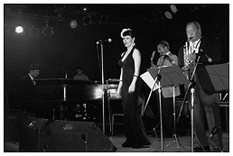

Here are some swing tunes that I love to listen and dance to:
A few years ago, a friend of mine dragged me into a dance lesson which included some ballroom styles as well as East Coast Swing.
I had so much fun dancing that we decided to take some beginners swing lessons. I have always loved singing,
playing, and listening to swing music, so making me dance to it didn't take much convincing. If you are interested in Swing,
the best place to learn and try it out is at the legion on Commercial Dr. (see poster below).
There are many different types of swing. The ones
I know are East Coast (great for beginners and faster music) and Lindy Hop (more
difficult, but looks better). Lindy Hop is the current style I'm working
on and I hope to take more lessons and have more practice in the future.
Lindy Hop is named after Charles Lindberg who made his famous
trans-Atlantic flight to Paris from New York in 1927.

Lavay Smith & Her Red Hot Skillet Lickers
The music is definitely what makes the dance happen.
Here are some swing tunes that I love to listen and dance to:
For some history and more information about the music, lingo, clothes, and styles of Swing, check out
Get Into the Swing.
The local swing scene (Vancouver, Canada):